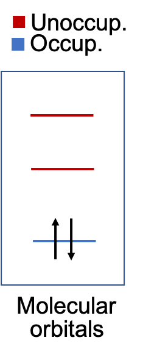
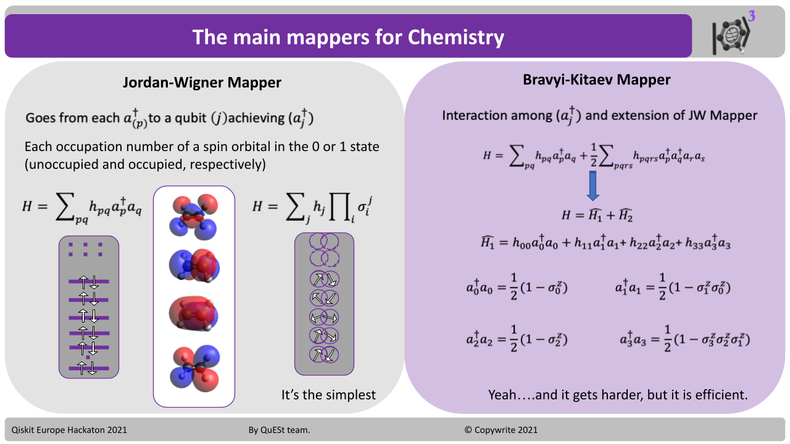

H2O Molecule
¶
In this tutorial, we will compute the ground state energy of H2O molecule and the double-dissociation of H atoms.
First, we should understand the quantum physics problem we have.
Our task is to solve the non-relativistic Schrödinger equation. To simplify our problem, we consider the Born-Oppenheimer Approximation to separate the problem into nuclei and electronic Hamiltonian. In this approximation, the nuclei can be considered stationary particles. The resulting Hamiltonian to describe our ground state electronic problem is:
\begin{equation*} H_{elec} = -\sum_{i} \frac {\nabla^2_{r_i}}{m_e} - \sum_{i,j} \frac {Z_i}{\lvert R_i-r_j\rvert} + \sum_{i,j>i} \frac {Z_i Z_j}{\lvert R_i-R_j \rvert} + \sum_{i,j>i} \frac {1}{\lvert r_i-r_j \rvert} \end{equation*}
Libraries¶
import sys
import time
from pyscf import gto, scf, mcscf, mp, cc, dft, ao2mo, lo, fci
from pyscf.tools import molden, cubegen
from pyscf.geomopt.geometric_solver import optimize
import numpy as np
from qiskit_nature.drivers import PySCFDriver, UnitsType, Molecule, HFMethodType
from qiskit_nature.problems.second_quantization.electronic import ElectronicStructureProblem
from qiskit_nature.converters.second_quantization import QubitConverter
from qiskit_nature.mappers.second_quantization import ParityMapper
from qiskit_nature.transformers import ActiveSpaceTransformer, FreezeCoreTransformer
from qiskit.algorithms import NumPyMinimumEigensolver
from qiskit_nature.algorithms.ground_state_solvers import GroundStateEigensolver
# qiskit
from qiskit.utils import QuantumInstance
from qiskit import Aer
from qiskit.algorithms.minimum_eigen_solvers import NumPyMinimumEigensolver, VQE
from qiskit.algorithms.optimizers import SLSQP
from qiskit.circuit.library import ExcitationPreserving
from qiskit import BasicAer
from qiskit.algorithms import NumPyMinimumEigensolver, VQE
from qiskit.algorithms.optimizers import SLSQP
# qiskit nature imports
from qiskit_nature.problems.second_quantization import ElectronicStructureProblem
from qiskit_nature.converters.second_quantization import QubitConverter
from qiskit_nature.mappers.second_quantization import JordanWignerMapper
from qiskit_nature.algorithms import GroundStateEigensolver
from qiskit_nature.drivers import PySCFDriver, UnitsType, Molecule
from qiskit_nature.algorithms.pes_samplers import BOPESSampler, Extrapolator
Defining a PySCF molecule¶
When using our graphical interface, you can upload directly an XYZ molecule file.
For this tutorial we will be using PySCF code for our classical quantum chemistry calculations. You can use the function my_pyscf_mol to generate an molecule object class within PySCF.
- symmetry
- spin
- charge
- units
- basis
- output
#Function to define a molecule with the GTO class
def my_pyscf_mol(xyz_file ,symmetry, spin, charge, units, basis, output):
my_molecule = gto.Mole()
my_molecule.fromfile(str(xyz_file))
my_molecule.symmetry = symmetry
my_molecule.spin = spin
my_molecule.charge = charge
my_molecule.unit = units
my_moleculeverbose = 5
my_molecule.basis = basis
my_molecule.output = output
my_molecule.build()
return my_molecule
#Read previously optimized RHF Optimized structures
opt_sto3g = my_pyscf_mol(xyz_file="opt_sto3g.xyz", symmetry=True, spin=0 , charge=0, units='A', basis='sto3g',output='opt_sto3g.out')
opt_631 = my_pyscf_mol(xyz_file="opt_631.xyz", symmetry=True, spin=0 , charge=0, units='A', basis='6-31G',output='opt_6-31G.out')
opt_ccpvdz = my_pyscf_mol(xyz_file="opt_ccpvdz.xyz", symmetry=True, spin=0 , charge=0, units='A', basis='ccpvdz',output='opt_ccpvdz.out')
#You can now have a RHF calculation
#STO3G
mf_opt_sto3g = scf.RHF(opt_sto3g)
mf_opt_sto3g.kernel()
#631G
mf_opt_631 = scf.RHF(opt_631)
mf_opt_631.kernel()
#ccpvdz
mf_opt_ccpvdz = scf.RHF(opt_ccpvdz)
mf_opt_ccpvdz.kernel()
Understand the HF problem Classically¶
Lets generate the MOs diagram of the problem of interest
-With STO-3G you get 7 Orbitals for H2O, 5 Occupied and 2 Unoccupied -This part is important to undertand for later in the Active and Inactive space definition.
import numpy as np
import matplotlib.pyplot as plt
from matplotlib.lines import Line2D
#Energies and occupation
Energies = mf_opt_sto3g.mo_energy # Energies
Occupation = mf_opt_sto3g.mo_occ/2 # Number of occupied orbitals
Orbital_number = int(len(Occupation)) # Number of orbitals within the basis set used
x = np.zeros(len(Energies))
#Get to arrays with occupied and unoccupied MO
counter=np.sum(Occupation)
occ_mo = Energies[0:int(counter)] # Occupied MOs array
x_occ = np.zeros(len(occ_mo))
unocc_mo = Energies[int(counter):len(Energies)] # Unccupied MOs array
x_unocc = np.zeros(len(unocc_mo))
mo_numbers = np.arange(len(Energies)) + 1
#Separate the MOs energies in x-axis
x_new = np.zeros(len(Energies))
i = 0
while i < len(Energies)-1:
temp = Energies[i]-Energies[i+1]
temp = np.abs(temp)
if temp > 0.2:
x_new[i] = 0
i = i + 1
elif temp < 0.2:
x_new[i] = -0.04
x_new[i+1] = 0.04
i = i+2
x_occ = x_new[0:int(counter)]
x_unocc = x_new[int(counter):len(Energies)]
#Plotting occupied and unoccupied in red and blue
plt.figure(figsize=(6,8))
plt.scatter(x_occ, occ_mo, c='dodgerblue', s=1444, marker="_", linewidth=2, zorder=3)
plt.scatter(x_unocc, unocc_mo, c='crimson', s=1444, marker="_", linewidth=2, zorder=3)
#Define limits of visualization
low_lim = int(counter)-2 # HOMO-2
top_lim = int(counter)+2 # LUMO+2
if top_lim > Orbital_number:
top_lim = Orbital_number
if low_lim < 0:
low_lim = 0
#Put the index of a range HOMO-2 and LUMO+2 (This can be an option)
for i in np.arange(low_lim,top_lim+1):
index =int(i-1)
text = str(i)
plt.annotate(text, xy=(x_new[index],Energies[index]),xytext=(x_new[index]-0.015,Energies[index]) ,xycoords='data' )
plt.ylabel('Energy [a.u]',fontsize=12)
plt.xlabel('MO',fontsize=15)
legend_elements = [Line2D([0], [0], color='dodgerblue',lw=3.5, label='Occu.'), Line2D([0], [0], color='crimson',lw=3.5, label='Unoccup'),]
plt.legend(handles=legend_elements,loc='upper right', fontsize=12 ,prop={'size': 10} , ncol=1, fancybox=True)
#Put the limits in y- HOMO-3 and LUMO+4 (This can be an option)
plt.ylim(Energies[low_lim-1],Energies[top_lim-1]+0.1)
plt.xlim(-0.1,0.1)
plt.xticks([])
Visualization of the Molecular Orbitals¶
To understand the electronic problem and the different MOs of interest. You can generate the isosurface representation of the wavefunction of the MOs. You can have an interactive visualization.
#Function to read XYZ files
def readXYZ(file):
f = open(file, "r")
lines = f.readlines()
filelength = len(lines)
progress = 0
geomcount = 0
geom = []
while progress < filelength:
tmpgeom = ""
length = int(lines[progress])+2
rangestart = progress
rangeend = progress + length
for i in range(rangestart, rangeend):
tmpgeom = tmpgeom + lines[i]
geom = geom + [tmpgeom]
geomcount = geomcount + 1
progress = progress + length
f.close()
return(''.join((geom)))
#Interactive selection of the functional of Interest
from __future__ import print_function
import py3Dmol
from ipywidgets import interact, interactive, fixed, interact_manual
import ipywidgets as widgets
def f(x):
index_i = int(x)-1
cubegen.orbital(opt_ccpvdz, 'temp.cube', mf_opt_ccpvdz.mo_coeff[:,index_i])
orbital_mol = open("temp.cube", "r").read()
v = py3Dmol.view()
v.addVolumetricData(orbital_mol, "cube", {'isoval': -0.04, 'color': "red", 'opacity': 0.75})
v.addVolumetricData(orbital_mol, "cube", {'isoval': 0.04, 'color': "blue", 'opacity': 0.75})
geom = readXYZ("opt_ccpvdz.xyz")
v.setStyle({'stick':{}})
v.zoomTo()
v.addModel(geom,"xyz")
v.setStyle({'stick':{}})
v.show()
MOs Isosurfaces visualization¶
#You can remove the comment and visualize the different MOs Isosurface
#interact(f, x=mo_numbers);
HF Embedding¶
The current use of quantum computing for computational chemistry studies is limited to a few atom molecules. Any organic molecule can easily have more than 10 atoms, meaning a high number of electrons and MOs depending on the basis set used. To overcome this, we can simplify our problem by having an active space description of the problem. Think of it as a CASSCF formalism where you define your orbitals of interest. In this tutorial, we will use the HF embedding formalism proposed by Rossmannek et al .
In a nutshell, this method proposes to split the electronic problem into inactive and active space. Where the active space is a selected number of electrons and molecular orbitals to be computed in the quantum computer. The inactive space contribution can be treated with classical quantum chemistry algorithms. The final Hamiltonian incorporates a mean-field potential from the inactive space. of the problem, willThe advantage is to reduce the number of qubits needed for an electronic problem and also to open the door to bigger molecules for quantum computing studies.

Qiskit Nature and PySCF driver¶
In this tutorial, we will use the Qiskit Nature implementation of the HF embedding. The classical quantum chemistry code use for the inactive space is PySCF.
The class Molecule defines QMolecule which is Qiskit definition of the molecule.
The driver PySCFDriver translates the information of the Qmolecule object from the PySCF library.
The hf_method parameter defines the if the restricted (RHF), unrestircted (UHF) or restricted-open (ROHF) configurations are used
Finally, by running the driver we get the new Qmolecule object for Qiskit Nature.
#using the class Molecule (From Qiskit Nature) we can make an object for PySCFDriver
#opt_sto3g is the GTO objectr from PySCF , in this case the optimized structure
molecule = Molecule(geometry=opt_sto3g.atom,charge=0, multiplicity=1)
#We call the PySCFDriver and we provided our define molecule object (molecule)
#Within the driver we define the units (ANGSTROM), basis using the GTO PySCF driver and hf_method RHF UHF or ROHF
driver = PySCFDriver(molecule=molecule, unit=UnitsType.ANGSTROM, basis=opt_sto3g.basis, hf_method=HFMethodType.RHF)
# #Running PySCF it prints convergence True or False (Important), Total Energy , Electronic dipole and Total dipole
#run PySCF with the use of the PySCFDriver and what we will know as quantum molecule
q_molecule = driver.run()
Quantum-Active-Space¶
Taking into account our first calculation within PySCF and the MOs diagram we can select our active space of interest.
q_molecule represent our molecule represented within the basis set selected and the level of theory (RHF)
The idea in this step is to define the number of electrons and orbitals to be assumed as active.
These active orbitals (and electrons) will be the ones that we will simulate with qubits instead of a classical computer.
In this tutorial we will define an active space of 2 electron and 3 orbitals (2,3)
Active space 2 electrons 3 orbitals

H2O molecule with the STO-3G basis set has 7 MO orbitals, where 5 are occupied.
This means that HOMO electrons are considered , and the MO orbitals are HOMO , LUMO and LUMO+1
In this example because of using STO-3G it means to consider ALL unoccupied MOs.
By calling the function ActiveSpaceTransformer you can customize your quantum active space.
num_electrons= (n)The number of active electrons. If this is a tuple, it represents the number of alpha and beta electrons.
num_molecular_orbitals(n)The number of active orbitals
active_orbitals=[int,] * listA list of indices specifying the molecular orbitals of the active space
#Based on the number of MO within the basis define the occupied and unoccupied virtuals
#ActiveSpaceTransformer will be use to selected the active space from the q_molecule MO representation
#You can define as (2,3) (#electrons, #orbitals)
#The selection of the MO is around the HOMO
active_space_trafo_2_3 = ActiveSpaceTransformer(num_electrons=2,num_molecular_orbitals=3)
#Another option is to specificalle define the index of the MO orbitals
#active_space_trafo_2_3 = ActiveSpaceTransformer(num_electrons=2,num_molecular_orbitals=3,active_orbitals=[4,5,6])
#Example (4,4) , Active Space HOMO-1, HOMO, LUMO and LUMO+1 (4,5,6,7 from the MO Energy diagram displayed above)
#active_space_trafo_4_4 = ActiveSpaceTransformer(num_electrons=2,num_molecular_orbitals=4)
#Defining the electronic structure problem
# We provide our PySCFDriver object and the active space (q_molecule_transformers)
es_problem = ElectronicStructureProblem(driver, q_molecule_transformers=[active_space_trafo_2_3])
# If we want to consider all the MOs for the qubit simulation, we do not use q_molecule_transformes
# es_problem = ElectronicStructureProblem(driver)
Defining a Second Quantized Hamiltonian¶
The way we described above the electronic hamiltonian was in the first-quantization formalism. This formalism assumes an infinite-dimensional Hilbert space. In Classical quantum chemistry applications, we use a finite set of basis set as an approximation. Second quantization formalism is a recursive way to represent this problem. In second-quantization formalism, the Hamiltonian can be represented using fermionic creation and annihilation operators.
\begin{equation*} H = \sum_{pq} h_{pq} a^{\dagger}p a{q} + h_{pqrs} a^{\dagger}p a^{\dagger}q a{r} a{s} \end{equation*}
Where \(a_p\) is an electron annihilation operator that removes an electron from an orbital with a label p. \(h_{pq}\) \(h_{pqrs}\) are the one and two electron integrals, espectively.
To prepare our quantum computation we can use pre-computed integrals (from PySCF in this example)
For this we can use our electronic structure problem and call the function to compute the second-quantization operators. The one of our interest is the Hamiltonian.
In order to learn more about how is the second quantization formed in the qubit formalism, take a look in the class .second_q_ops() if the ElectronisStructureProblem function.
The indexes of .second_q_ops()[n] are for n:
Electronic Structure operator a.k.a. “Hamiltonian” or 𝐻
Total Magnetization operator
Total Angular Momentum operator
Total Particle Number operator
x Dipole operator
y Dipole operator
z Dipole operator
# Generate the second-quantized operators
second_q_ops = es_problem.second_q_ops()
#Returns:
#A list of `SecondQuantizedOp` in the following order: Hamiltonian operator,
#total particle number operator, total angular momentum operator, total magnetization
#operator, and (if available) x, y, z dipole operators.
#"""
main_op = second_q_ops[0]
Mapping the electronic structure¶
Once we the second-quantization representation, we must translate this Hamiltonian into a Quantum computing circuit. To simulate our MOs in a quantum computer.
This can be achieved by mapping the second quantization representation (creation and annihilation operators) into a set of operators on qubits. This mapping must converse the properties of the Hamiltonian such as the fermionic canonical commutation relations.
All known elementary and composite particles are bosons or fermions, depending on their spin: Particles with half-integer spin are fermions; particles with integer spin are bosons. In Quantum computing there are different algorithms to “mapped” this second quantize representation into qubits depending if the problems are Fermions or Bosons, since we are working with electrons (Fermions) we will use a selected group of Mapping algorithms for Fermion problems.
Two known algorithms are the Jordan-Wigner and Bravy-Kitaev Mappers
For this tutorial we will use the Bravy-Kitaev Mappers since is know to lead to less qubits than Jordan-Wigner
The QubitConverter is called to define the translate of your second quantization operators using the defined mapping.
Mapper:We strongly suggest to stick with ‘JordanWignerMapper’ or with ‘BravyiKitaevMapper’ which are praised in the literature as the most relevant for quantum chemical simulation.
two_qubit_reduction:Is it s popular technique which uses ***** techniques to substract two or three qubits from the calculations
z2symmetry_reduction:Can be set into ‘auto’ which will automaticall look for symmetries, this technique can be also customized, but the correct symmetries need to be added.
from qiskit_nature.mappers.second_quantization import ParityMapper, BravyiKitaevMapper, JordanWignerMapper, FermionicMapper
from qiskit_nature.converters.second_quantization.qubit_converter import QubitConverter
# Setup the mapper and qubit converter
#For the choices we should have 3 ParityMapper, JordanWignerMapper and FermionicMapping
mapper_type = 'BravyiKitaevMapper'
if mapper_type == 'JordanWignerMapper':
mapper = JordanWignerMapper()
elif mapper_type == 'BravyiKitaevMapper':
mapper = BravyiKitaevMapper()
converter = QubitConverter(mapper=mapper, two_qubit_reduction=False )#, z2symmetry_reduction='auto' or 'none')
# The fermionic operators are mapped to qubit operators
num_particles = (es_problem.molecule_data_transformed.num_alpha,
es_problem.molecule_data_transformed.num_beta)
qubit_op = converter.convert(main_op, num_particles=num_particles)
Describing an Initial State¶
For our simulations, we will define an initial state for the mapped problem.
Since we are simulating a electronic problem. We know that the best initial guess is to have all electrons occupying the lowest orbitals (Hund’s rule).
In this section, since we will give the initial state using the class HartreeFock
Electrons should occupy the lowest orbitals.
from qiskit_nature.circuit.library import HartreeFock
num_particles = (es_problem.molecule_data_transformed.num_alpha,
es_problem.molecule_data_transformed.num_beta)
num_spin_orbitals = 2 * es_problem.molecule_data_transformed.num_molecular_orbitals
init_state = HartreeFock(num_spin_orbitals, num_particles, converter)
print(init_state)
VQE and Ansatz¶
VQE is a hybrid classical-quantum algorithm that is capable to estimate molecular properties such as ground state energies in quantum systems using the variational principle. In this case the wavefunction anzats preparation and energy estimation are both implemed in the quantum cumputer.
VQE algorithm follows these general steps:
1. prepare the parametrized trial quantum state on the quantum computer
2. estimate the expectation value of energy using measurements of terms in the Hamiltonian,
3. update the parameter(s) of the quantum state using a classical optimization routine, and
4. repeat the previous steps until convergence criteria (e.g., in energy and/or iteration number) are satisfied.
Classical quantum chemistry calculations use coupled-cluster methods for the solution of electronic structure problems due to their accuracy. The ansatz for the traditional coupled-cluster method is to use the HF reference wavefunction and apply excitations operators. Generally, the operation of the excitation is truncated to lower excitations like single and double excitations.
Since this ansatz can be interpreted as fermionic operators this one can be also mapped and used in quantum computers. This ansatz can be readily implemented by mapping fermionic excitation operators to qubit operators and applying the Trotter−Suzuki decomposition to the cluster operator. In this tutorial, we will use the unitary coupled-cluster ansatz truncated up to single and double excitations (UCCSD) for our VQE algorithm.
from qiskit.circuit.library import TwoLocal
from qiskit_nature.circuit.library import UCCSD, PUCCD, SUCCD
# Parameters for q-UCC antatze
num_particles = (es_problem.molecule_data_transformed.num_alpha,
es_problem.molecule_data_transformed.num_beta)
num_spin_orbitals = 2 * es_problem.molecule_data_transformed.num_molecular_orbitals
ansatz = UCCSD(converter,num_particles,num_spin_orbitals,initial_state = init_state)
print(ansatz)
Backend¶
The backend: this is the quantum machine on which the right part of the figure above will be performed.
Now that you have \(\psi(\vec\theta)\) and \(\hat{H}\) in the translated is time to chose the solvers.
As as well as the possible services that you have in the IBMQ experience service.
Nunerical solutions can be obtained localy using two solvers NumPyMinimumEigensolver() or numerical VQE using QasmSimulatorPy() as a backend
First of all you need to get an account at IBMQ experience andn get access to the service and a complete spectrum if rescources to start working with real quantun computers.
Once you have access to your API Token you can copy it in credentials(‘API_token’).
Now you need to look at your allowed providers by instanting its class.
This will later allow access to the backends, where the job will take place.
The list is divided in two main sections:
Simulators
Numerical simulators of several qubits and with specifil representations
Specific to problems
Easier access
Systems _ Limited number of qubits (max 15)
Experimental error analysis
Eror correction implementaton algoritms
Longer queue
Here we ask for the perfect quantum emulator
from qiskit import Aer
backend = Aer.get_backend('statevector_simulator')
Optimizer¶
Here we can define the optimizer for the VQE algorithm.
In the case of optimizers, long can be discussed about the behavior of each parameters.
For most of them the origina documentation is easily accessible.
For this tutorial we will be using L_BFGS_B
from qiskit.algorithms.optimizers import COBYLA, L_BFGS_B, SPSA, SLSQP
optimizer_type = 'L_BFGS_B'
# You may want to tune the parameters
# of each optimizer, here the defaults are used
if optimizer_type == 'COBYLA':
optimizer = COBYLA(maxiter=500)
elif optimizer_type == 'L_BFGS_B':
optimizer = L_BFGS_B(maxfun=500)
elif optimizer_type == 'SPSA':
optimizer = SPSA(maxiter=500)
elif optimizer_type == 'SLSQP':
optimizer = SLSQP(maxiter=500)
Solving the Ground State Energy¶
We call the function GroundStateEigensolver which requires inputs:
converter
Which is the problem mapped and translated in the correct formalism
solver
The engine which will simulate or coordinate the quantum computation of the quantum circuit generated by the ansatzs and qubit converter
NumPyMinimumEigensolverFactory()
NumPyMinimumEigensolver()
QasmSimulatorPy()
IBMQ_Backends
Simulators
ibmq_qasm_simulator
simulator_statevector
simulator_stabilizer -Systems
ibmq_manila
ibmq_santiago
1bmq_16_melbourne
Classical solution¶
We can solve the problem numerically within the Numpy. This algorithm exactly diagonalizes the Hamiltonian.
from qiskit_nature.algorithms.ground_state_solvers.minimum_eigensolver_factories import NumPyMinimumEigensolverFactory
from qiskit_nature.algorithms.ground_state_solvers import GroundStateEigensolver
import numpy as np
def exact_diagonalizer(problem, converter):
solver = NumPyMinimumEigensolverFactory()
calc = GroundStateEigensolver(converter, solver)
result = calc.solve(problem)
return result
result_exact = exact_diagonalizer(es_problem, converter)
exact_energy = np.real(result_exact.eigenenergies[0])
print("Exact electronic energy", exact_energy)
print(result_exact)
VQE and initial parameters for the ansatz¶
Once we have define the ansatz, optimizer, the initial state, and backend we are ready to run our VQE algorithm.
from qiskit.algorithms import VQE
from IPython.display import display, clear_output
# Print and save the data in lists
def callback(eval_count, parameters, mean, std):
# Overwrites the same line when printing
display("Evaluation: {}, Energy: {}, Std: {}".format(eval_count, mean, std))
clear_output(wait=True)
counts.append(eval_count)
values.append(mean)
params.append(parameters)
deviation.append(std)
counts = []
values = []
params = []
deviation = []
# Set initial parameters of the ansatz
# We choose a fixed small displacement
# So all participants start from similar starting point
try:
initial_point = [0.01] * len(ansatz.ordered_parameters)
except:
initial_point = [0.01] * ansatz.num_parameters
algorithm = VQE(ansatz,
optimizer=optimizer,
quantum_instance=backend,
callback=callback,
initial_point=initial_point)
result = algorithm.compute_minimum_eigenvalue(qubit_op)
print(result)
Sampling PES Symmetric dissociation profiles of Hydrogen from the H2O molecule¶
For this calculation , we wil repeat the previously explained tutorial.
We will make use of the pes_samplers library
Lets first re-define the H2O molecule and include two bonds as degree of freedom
#Generate the Molecule with the bond streching degree of freedom
from functools import partial
from qiskit_nature.algorithms.pes_samplers import BOPESSampler, Extrapolator
#We will define the OH as a degree of freedom
bond_d1 = partial(Molecule.absolute_stretching, atom_pair=(1, 0))
bond_d2 = partial(Molecule.absolute_stretching, atom_pair=(2, 0))
#Creation of H2O Molecule object bond stretching
mol_H2O_BS = Molecule(geometry=opt_sto3g.atom,charge=0, multiplicity=1,
degrees_of_freedom=[bond_d1,bond_d2])
#pass molecule to PSYCF driver
driver_BS= PySCFDriver(molecule=mol_H2O_BS)
#Running PySCF it prints convergence True or False (Important), Total Energy , Electronic dipole and Total dipole
q_molecule = driver_BS.run()
#(2,3)
active_space_trafo_2_3 = ActiveSpaceTransformer(num_electrons=2,num_molecular_orbitals=3)
#Defining the electronic structure problem
es_problem = ElectronicStructureProblem(driver_BS, q_molecule_transformers=[active_space_trafo_2_3])
# qiskit
from qiskit.utils import QuantumInstance
from qiskit import Aer
# Generate the second-quantized operators
second_q_ops = es_problem.second_q_ops()
# Hamiltonian
main_op = second_q_ops[0]
# Setup the mapper and qubit converter
mapper_type = 'BravyiKitaevMapper'
if mapper_type == 'JordanWignerMapper':
mapper = JordanWignerMapper()
elif mapper_type == 'BravyiKitaevMapper':
mapper = BravyiKitaevMapper()
qubit_converter = QubitConverter(mapper=mapper, two_qubit_reduction=False)
# The fermionic operators are mapped to qubit operators
num_particles = (es_problem.molecule_data_transformed.num_alpha,
es_problem.molecule_data_transformed.num_beta)
qubit_op = qubit_converter.convert(main_op, num_particles=num_particles)
num_particles = (es_problem.molecule_data_transformed.num_alpha,
es_problem.molecule_data_transformed.num_beta)
num_spin_orbitals = 2 * es_problem.molecule_data_transformed.num_molecular_orbitals
init_state = HartreeFock(num_spin_orbitals, num_particles, qubit_converter)
print(init_state)
# Choose the ansatz
from qiskit.algorithms.optimizers import COBYLA, L_BFGS_B, SPSA, SLSQP, CG
# Parameters for q-UCC antatze
num_particles = (es_problem.molecule_data_transformed.num_alpha,
es_problem.molecule_data_transformed.num_beta)
num_spin_orbitals = 2 * es_problem.molecule_data_transformed.num_molecular_orbitals
ansatz = UCCSD(qubit_converter,num_particles,num_spin_orbitals,initial_state = init_state)
print(ansatz)
from qiskit import Aer
backend = Aer.get_backend('statevector_simulator')
optimizer = L_BFGS_B(maxfun=2000)
# Specify degree of freedom (points of interest)
points = np.linspace(-0.25, 1, 8)
results_full = {} # full dictionary of results for each condition
results = {} # dictionary of (point,energy) results for each condition
conditions = {False: 'no bootstrapping', True: 'bootstrapping'}
#try:
# initial_point = [0.01] * len(ansatz.ordered_parameters)
#except:
initial_point = [0.01] * ansatz.num_parameters
solver= VQE(ansatz,
optimizer=optimizer,
quantum_instance=QuantumInstance(backend),
callback=callback,
initial_point=initial_point)
me_gsc = GroundStateEigensolver(qubit_converter, solver)
Here lets compute the PES using the class BOPESSampler
for value, bootstrap in conditions.items():
# define instance to sampler
bs = BOPESSampler(
gss=me_gsc
,bootstrap=value
,num_bootstrap=None
,extrapolator=None)
# execute
res = bs.sample(es_problem,points)
results_full[f'{bootstrap}'] = res.raw_results
results[f'points_{bootstrap}'] = res.points
results[f'energies_{bootstrap}'] = res.energies
Compare to classical eigensolver¶
We can repeat the same calculation with the NumPyMinimumEigensolver()
# define numpy solver
#All molecule
converter_full = QubitConverter(mapper=BravyiKitaevMapper(), two_qubit_reduction=False)
es_problem_full = ElectronicStructureProblem(driver_BS)
solver_numpy = NumPyMinimumEigensolver()
me_gsc_numpy = GroundStateEigensolver(converter_full, solver_numpy)
bs_classical = BOPESSampler(
gss=me_gsc_numpy
,bootstrap=False
,num_bootstrap=None
,extrapolator=None)
# execute
res_np = bs_classical.sample(es_problem_full, points)
results_full['np'] = res_np.raw_results
results['points_np'] = res_np.points
results['energies_np'] = res_np.energies
import numpy as np
import pandas as pd
import matplotlib.pyplot as plt
fig = plt.figure()
for value, bootstrap in conditions.items():
plt.plot(results[f'points_{bootstrap}'], results[f'energies_{bootstrap}'], label = f'{bootstrap}')
plt.plot(results['points_np'], results['energies_np'], label = 'numpy')
plt.legend()
plt.title('Dissociation profile')
plt.xlabel('Interatomic distance')
plt.ylabel('Energy')
We can use PySCF to compute the FCI and compare with our previous calculations
#Full CI
import pyscf
from pyscf import fci
isolver = pyscf.fci.FCI(opt_sto3g, mf_opt_sto3g.mo_coeff)
#Genera the perturbations points to apply
points = np.linspace(-0.25, 1, 8)
FCI = []
opt_sto3g.fromfile("opt_sto3g.xyz") #Read the original structure
opt_sto3g.build() # Update the GTO object from PySCF
for i in points: #Loop to apply all pertubations
mol_H2O_BS.perturbations = [i,i]
temp = mol_H2O_BS.geometry
opt_sto3g.atom = temp # Save the geometry with the perturbation
opt_sto3g.build() #Update the geometry
mf_opt_sto3g = scf.RHF(opt_sto3g) #Run a RHF calculation
mf_opt_sto3g.kernel()
isolver = pyscf.fci.FCI(opt_sto3g, mf_opt_sto3g.mo_coeff) #Run a FCI calculation
isolver.kernel()
FCI.append(isolver.e_tot)
#Plot your FCI results along with your previous calculations
import numpy as np
import pandas as pd
import matplotlib.pyplot as plt
fig = plt.figure()
for value, bootstrap in conditions.items():
plt.plot(results[f'points_{bootstrap}'], results[f'energies_{bootstrap}'], label = f'{bootstrap}')
plt.plot(results['points_np'], results['energies_np'], label = 'numpy')
plt.plot(results['points_np'], FCI , label = 'FCI')
plt.legend()
plt.title('Dissociation profile')
plt.xlabel('Interatomic distance')
plt.ylabel('Energy')
#631 Basis set
#Creation of H2O Molecule object bond stretching
mol_H2O_631 = Molecule(geometry=opt_631.atom,charge=0, multiplicity=1,
degrees_of_freedom=[bond_d1,bond_d2])
#pass molecule to PSYCF driver
driver_631= PySCFDriver(molecule=mol_H2O_BS, basis=opt_631.basis)
#Running PySCF it prints convergence True or False (Important), Total Energy , Electronic dipole and Total dipole
q_molecule = driver_631.run()
#(2,3)
active_space = ActiveSpaceTransformer(num_electrons=4,num_molecular_orbitals=5)
#Defining the electronic structure problem
problem_631 = ElectronicStructureProblem(driver_631, q_molecule_transformers=[active_space])
Repeat the tutorial using a pople basis set
#Generate the second-quantized operators
second_q_ops_631 = problem_631.second_q_ops()
#Hamiltonian
main_op = second_q_ops_631[0]
converter = QubitConverter(mapper=BravyiKitaevMapper(), two_qubit_reduction=False)
#The fermionic operators are mapped to qubit operators
num_particles = (problem_631.molecule_data_transformed.num_alpha,
problem_631.molecule_data_transformed.num_beta)
qubit_op = converter.convert(main_op, num_particles=num_particles)
num_particles = (problem_631.molecule_data_transformed.num_alpha,
problem_631.molecule_data_transformed.num_beta)
num_spin_orbitals = 2 * problem_631.molecule_data_transformed.num_molecular_orbitals
init_state = HartreeFock(num_spin_orbitals, num_particles, converter)
print(init_state)
# Parameters for q-UCC antatze
num_particles = (problem_631.molecule_data_transformed.num_alpha,
problem_631.molecule_data_transformed.num_beta)
num_spin_orbitals = 2 * problem_631.molecule_data_transformed.num_molecular_orbitals
ansatz = UCCSD(converter,num_particles,num_spin_orbitals,initial_state = init_state)
print(ansatz)
from qiskit import Aer
backend = Aer.get_backend('statevector_simulator')
optimizer = L_BFGS_B(maxfun=2000)
#Set initial parameters of the ansatz
#We choose a fixed small displacement
#So all participants start from similar starting point
try:
initial_point = [0.001] * len(ansatz.ordered_parameters)
except:
initial_point = [0.001] * ansatz.num_parameters
solver= VQE(ansatz,
optimizer=optimizer,
quantum_instance=QuantumInstance(backend),
callback=callback,
initial_point=initial_point)
me_gsc = GroundStateEigensolver(qubit_converter, solver)
for value, bootstrap in conditions.items():
# define instance to sampler
bs = BOPESSampler(
gss=me_gsc
,bootstrap=value
,num_bootstrap=None
,extrapolator=None)
# execute
res = bs.sample(problem_631,points)
results_full[f'{bootstrap}'] = res.raw_results
results[f'points_{bootstrap}'] = res.points
results[f'energies_{bootstrap}'] = res.energies